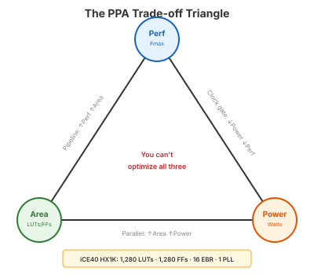

Video 3 of 4 · ~15 minutes
UCF · Department of ECE

Performance — how fast?
Clock frequency, throughput, latency
Power — how much energy?
Dynamic (switching) + static (leakage)
Area — how much silicon?
Gate count, LUT utilization, die size
We can't measure ASIC-style PPA directly, but we have excellent proxies:
| PPA Axis | FPGA Proxy | Tool |
|---|---|---|
| Performance | Fmax (max clock frequency) | nextpnr --freq |
| Area | LUT count, FF count, EBR count | yosys stat |
| Power | Toggle rate × capacitance (conceptual) | Limited on iCE40 |
yosys stat report is a % utilization of these fixed resources.
Pipelining (Segment 1): Improves Fmax, costs FFs. Adds latency.
↑ Performance, ↑ Area (FFs), ≈ Power
Sequential vs. combinational multiply (Segment 2): Reduces LUTs, costs cycles.
↓ Performance (latency), ↓ Area (LUTs), ↑ Performance (Fmax)
if/else vs case (Day 3): Priority chain may have longer critical path but similar area.
Different Performance, ≈ Area — depends on context
Adding features (Day 12/14 parity): More functionality costs LUTs.
Feature cost: how many LUTs per feature?
The format you'll use for labs and the final project:
| Module | Configuration | LUTs | FFs | Fmax (MHz) | Notes |
|---|---|---|---|---|---|
| Adder | Ripple-carry, 8-bit | — | — | — | |
| Adder | Behavioral +, 8-bit | — | — | — | |
| Multiplier | Combinational *, 8-bit | — | — | — | 1 cycle |
| Multiplier | Shift-and-add, 8-bit | — | — | — | 8 cycles |
Plus a brief analysis: "The sequential multiplier uses X fewer LUTs than the combinational version, at the cost of 8 cycles of latency. For applications where throughput matters more than latency, the combinational version is preferred despite the area cost."
Synthesize the same module at multiple parameter values. Plot the results.
LUTs
│
120│ * (32-bit)
│
60│ * (16-bit)
│
30│ * (8-bit)
│
15│ * (4-bit)
│
└───────────────────────────────────── Width
4 8 16 32
Adders: roughly linear growth
Multipliers: quadratic growth (no DSP!)
① PPA = Performance + Power + Area. You can't optimize all three.
② FPGA proxies: Fmax (perf), LUTs/FFs (area), toggle rate (power, conceptual).
③ Every design decision has PPA consequences. Make them explicit.
④ Structured reporting: comparison table + written analysis.
⑤ Design-space exploration: sweep parameters, plot the curves.
Up Next
Video 4 of 4 · ~5 minutes
How the PPA habits you're building transfer to real chip design.